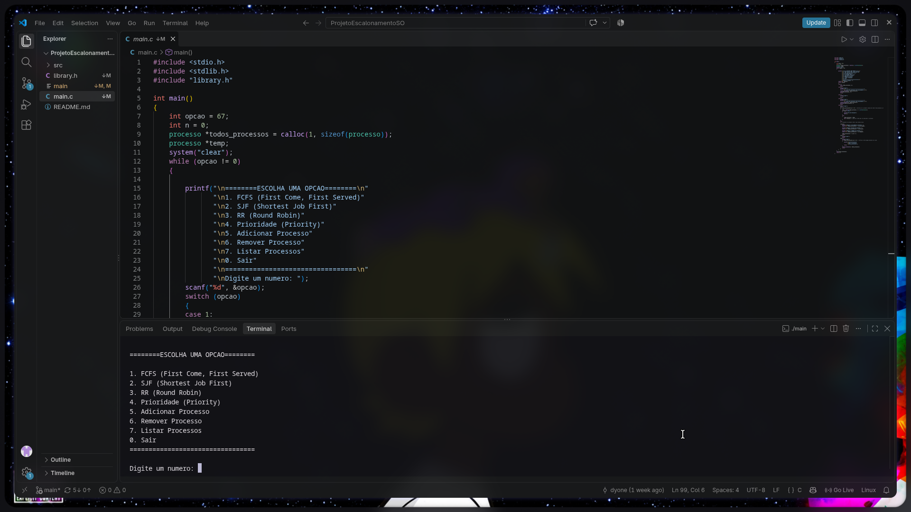

Simulador de escalonamento
Projeto em grupo desenvolvido em C para a disciplina de Sistemas Operacionais. Minha contribuição foi a implementação do algoritmo FCFS, que executa os processos por ordem de chegada.
Ver repositório do simulador